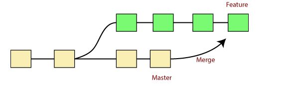

In Git, the merging is a procedure to connect the forked history. It joins two or more developement history together. The git merge command facilitates you to take the data created by git branch and integrate then into a single branch. Git merge will associate a series of commits into one unified history. Generally, git merge is used to combine two branches.  In the above figure , there are two branches master and feature. We can see that we made some commits in both feature and master branch, and merge them. It works as a pointer. It will find a common base commit between branches. Once Git finds a shared base commit, it will create a new "merge commit". It combines the changes of each queued merge commit sequence.To merge -
git merge branch_nameTo verify the merge -
git logTo push to central repo like github -
git push origin master Note:- Git Pulling Request - Usually happend before merge to check if any conflict is happening or not. While merging two different branches or merging another branch with master.